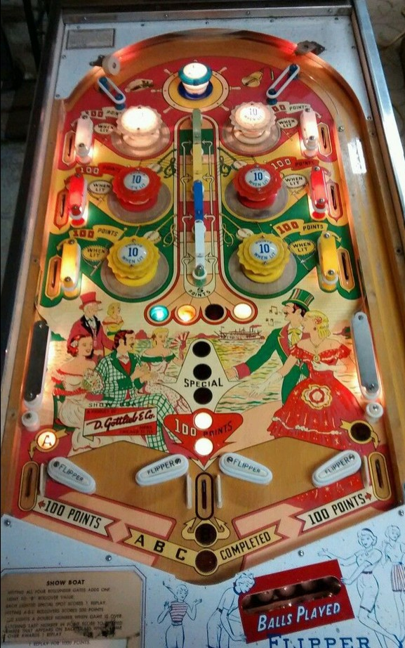

The main progression on Show Boat is to go through all 4 rollunder gates. The gates face side to side, so the ball has to travel horizontally to trigger them. From top to bottom, the gates are labelled green, yellow, red/purple, and white. Just below the lowest gate are inserts of these 4 colours, which start on. Going through a rollunder gate unlights that colour. Rollunder gates score 5 points whether lit or not.
The center out lane between the sets of flippers starts the game at a value of 100 points. Completing a set of 4 rollunders once increases the value to 200 points. A second completion lights one Special at the center out lane. The third and fourth completions each light additional Specials, meaning the max value of a single trip through the center out lane is 200 points plus 3 Specials. Specials can only score free games, not points or additional balls. Completing the rollunder gates for a fifth (or more) time in a game scores 1 replay instantly.
There are six pop bumpers in three pairs: the upper pair is white, the middle pair is red, and the bottom pair is yellow. The blue passive bumper at the top of the game or making any rollunder gate scores 5 points and rotates which colour of pop bumpers is lit. When a pop bumper is lit, it scores 10 points instead of 1. and the associated side lane near that bumper along the edge of the table scores 100 points instead of 10.
Show Boat has 4 flippers, arranged as two separate conventional-looking pairs. The left flipper button operates both flippers on the left half of the game at the same time, and the right flipper button operates both flippers on the right half of the game. There are 3 out lanes: A on the far left which always scores 100 points, B between the flipper pairs that has an increasing value governed by rollunder gates as described above, and C on the far right which always scores 100 points. Making an out lane that is lit for a letter will collect and unlight that letter. Collecting all of A-B-C in one game will light a second match number on the backbox at the end of the game, giving you a 20% chance to earn a free game from the number match sequence instead of 10%. It is possible to drain a ball between the two flippers in each pair, which does not score any points or letters.
There is no end of ball bonus or extra ball feature. Tilt ends game.
The below picture of Show Boat's playfield was taken from the Internet Pinball Database, where it was originally provided by Darryl Anderson.
